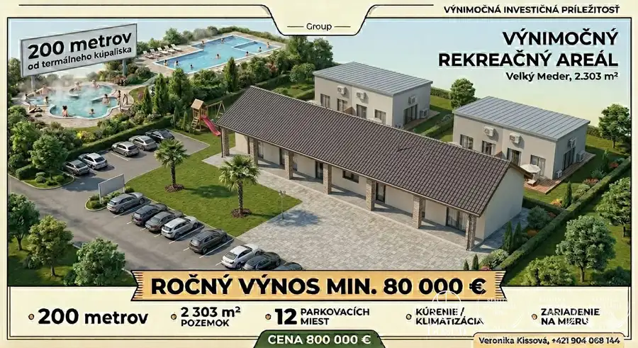
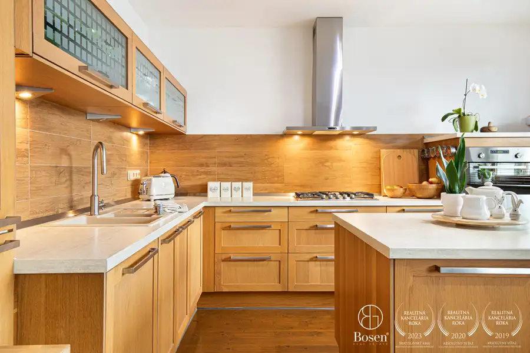
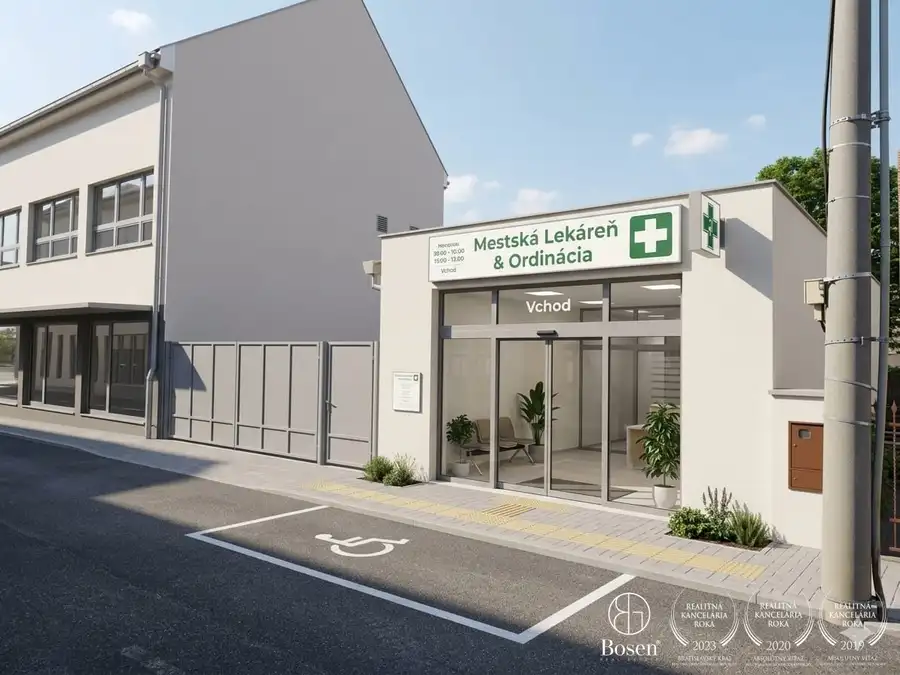

BOSEN | Rodinný dom s veľkou záhradou, Veľká Budafa
Holice
- Plocha135 m²
- StavČiastočná rekonštrukcia
- VlastníctvoOsobné
O nehnuteľnosti
Bosen Group Vám ponúka na predaj rodinný dom v obci Veľká Budafa. Nehnuteľnosť sa nachádza vo výbornej lokalite s rýchlym napojením na rýchlostnú cestu R7, vzdialenú približne 5 minút jazdy autom. Dom ponúka priestranné bývanie, viacero doplnkových stavieb a rozsiahly pozemok s množstvom možností využitia na bývanie, podnikanie alebo chov zvierat.DISPOZÍCIA A VYBAVENIERodinný dom s úžitkovou plochou 135 m² pozostáva zo vstupnej chodby, priestrannej obývacej izby s klimatizáciou, kuchyne, dvoch samostatných spální, šatníka, kúpeľne spojenej s WC a špajze o výmere približne 4 m².Kuchyňa je vybavená kuchynskou linkou, elektrickou rúrou, sklokeramickou varnou doskou, digestorom a drezom. Súčasťou kuchyne je aj priestor určený na umiestnenie práčky.Kúpeľňa disponuje rohovou vaňou, sprchovým kútom, dvojumývadlom a toaletou.V obytných miestnostiach sú osadené radiátory, pričom v kuchyni a kúpeľni je podlahové vykurovanie. V celom dome sú plastové okná, stropy sú zateplené a vybavené moderným bodovým osvetlením. Obvodové múry domu sú zateplené polystyrénom.Kompletná rekonštrukcia domu prebehla približne pred 20 rokmi. Strecha rodinného domu je vo veľmi dobrom technickom stave. Zachovalá povala so zdravou drevenou konštrukciou ponúka možnosť vybudovania ďalšieho obytného priestoru.PRÍSTAVBA A DOPLNKOVÉ STAVBYSúčasťou nehnuteľnosti je aj prístavba s výmerou približne 35 m², ktorá disponuje samostatnou kuchyňou, WC, izbou a skladovým priestorom. Objekt je napojený na elektrinu aj plyn, vďaka čomu ponúka široké možnosti využitia, napríklad ako hosťovský domček, kancelária alebo priestor na podnikanie.Pred prístavbou sa nachádza rozsiahla prekrytá betónová plocha s výmerou približne 100 m² vhodná na rodinné stretnutia, oslavy alebo firemné akcie. Strešná konštrukcia prekrytia si vyžaduje rekonštrukciu.V zadnej časti záhrady sa nachádza ďalšia stavba, ktorá bola využívaná ako terárium s vnútorným bazénom pre chov exotických zvierat. Súčasťou sú aj priestory určené pre korytnačky, vtáctvo alebo ďalšie druhy plazov.POZEMOK A ZÁHRADAVstup na pozemok je zabezpečený bránkou a súkromným parkovaním pre dve vozidlá. Vjazd autom umožňuje dvojkrídlová brána s elektrickým pohonom a diaľkovým ovládaním.Dominantou záhrady je okrasné jazierko s ostrovčekom a altánkom, ku ktorému vedie drevený most. K dispozícii je tiež funkčný bazén, ktorý momentálne nie je napustený.Nehnuteľnosť je napojená na vlastnú studňu a žumpu. Kanalizácia sa nachádza priamo na ulici s možnosťou budúceho pripojenia.LOKALITAObec Veľká Budafa ponúka pokojné vidiecke bývanie s výbornou dostupnosťou do okresného mesta Dunajská Streda. Veľkou výhodou je rýchle napojenie na rýchlostnú cestu R7, vďaka čomu je zabezpečená komfortná dostupnosť smerom do Bratislavy aj okolitých miest.VÝHODY• Výborná dostupnosť na R7 do 5 minút autom• Rodinný dom s úžitkovou plochou 135 m²• Samostatná prístavba s kuchyňou a izbou• Klimatizácia v obývacej izbe• Podlahové kúrenie v kuchyni a kúpeľni• Plastové okná a zateplený dom• Možnosť rozšírenia bývania v podkroví• Prekrytá betónová plocha 100 m² vhodná na spoločenské akcie• Funkčný bazén a okrasné jazierko s altánkom• Priestory vhodné na chov exotických zvierat• Parkovanie pre dve vozidlá na vlastnom pozemku• Elektrická vstupná brána na diaľkové ovládanieCENA A PODMIENKYCena: 242.000 € Maklér: Veronika Kissovátel.: +421 904 068 144e-mail: kissova@bosen.skRealitná kancelária BOSEN GROUP je členom Realitnej únie SR a riadi sa jej Realitným kódexom. Uvedená cena je konečná – zahŕňa províziu RK, právny servis advokátskej kancelárie, správne poplatky na katastri, poradenstvo pri prevode nehnuteľnosti a bezplatnú ponuku financovania prostredníctvom hypotéky.
Parametre
| Druh | Rodinný dom |
|---|---|
| Dátum zverejnenia | 8. 6. 2026 |
| Plocha pozemku | 1028 m² |
| Počet izieb / miestností | 3 |
| Rok poslednej rekonštrukcie | 2006 |
| Stav nehnuteľnosti | Čiastočná rekonštrukcia |
| Telekomunikácie | Internet |
| Terén pozemku | Rovinatý |
| Typ | Predaj |
| Vlastníctvo | Osobné |
| Vybavenie | Terasa, Špajza, Sklad, Technická miestnosť |
| Vykurovanie | Podlahové |
| Zastavaná plocha | 135 m² |
| Úžitková plocha | 135 m² |
Kde to je


Mohlo by Vás zaujímať

Komerčné priestoryNové 800 000 €BOSEN | Rekreačný areál s piatimi apartmánmi – Veľký Meder Veľký Meder 620 m² Bosen Group Vám ponúka na predaj výnimočný rekreačný areál pozostávajúci z 5 samostatných, moderne vybavených apartmánov nachádzajúcich sa na…
DomNové10 246 500 €Bosen | 5 izbový rodinný dom s veľkou záhradou, Horné Saliby Horné Saliby 180 m² Bosen Group Vám ponúka na predaj priestranný, kompletne zrekonštruovaný 5 izbový rodinný dom v obci Horné Saliby. Stačí pozrieť, rozhodnúť sa a…
Komerčné priestoryNové9 1 200 €Priestranný 100 m² priestor v Dunajskej Strede – dokončenie majiteľom podľa Vašich predstáv Dunajská Streda 100 m² kancelárie a poradenstvo pri prenBosen Group Vám ponúka na prenájom veľkometrážny 100 m² priestor vo výbornej lokalite v Dunajskej Strede.Budova sa…